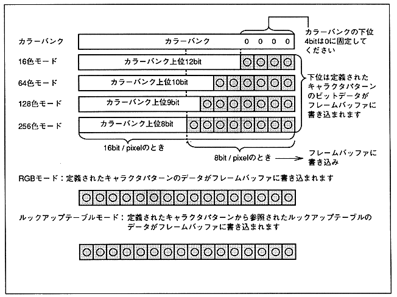

Return to previous page ｜ Return to menu ｜ Go to next page
-
Color Bank
-
- When the color mode of the texture part is the color bank mode, the color bank is a bit added to the upper bits when writing the pixel data of the character pattern to the frame buffer .
- Specify the color bank with 16 bits, but fix the lower 4 bits to 0. Depending on the color mode, it is 12, 10, 9, 8 bits. The addition is as follows.
- When 16bit / pixel, this data is written to the frame buffer as it is. When 8 bits / pixel, the lower 8 bits are written.
Figure 6.17 Color bank

Return to previous page ｜ Return to menu ｜ Go to next page